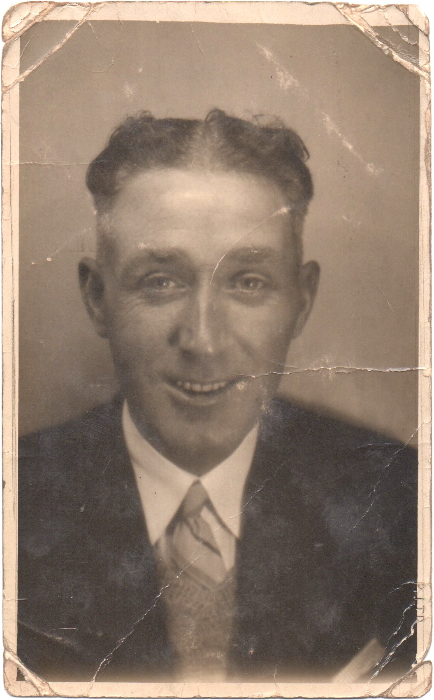
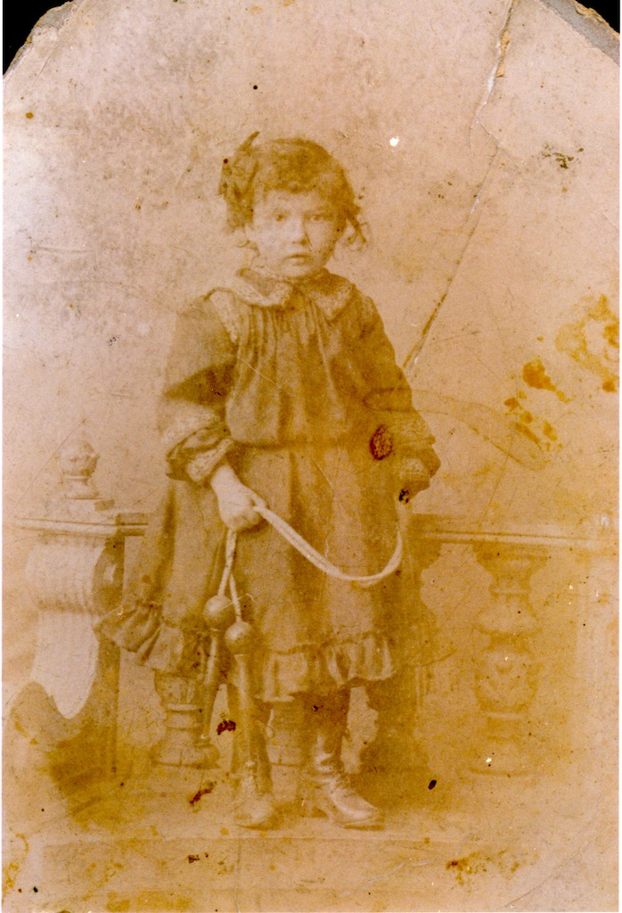
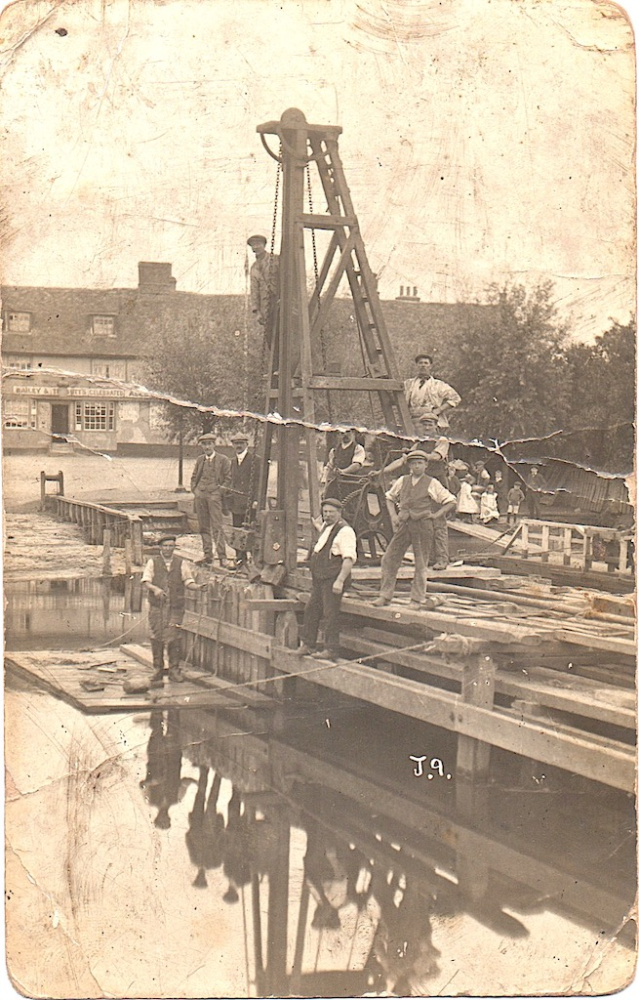
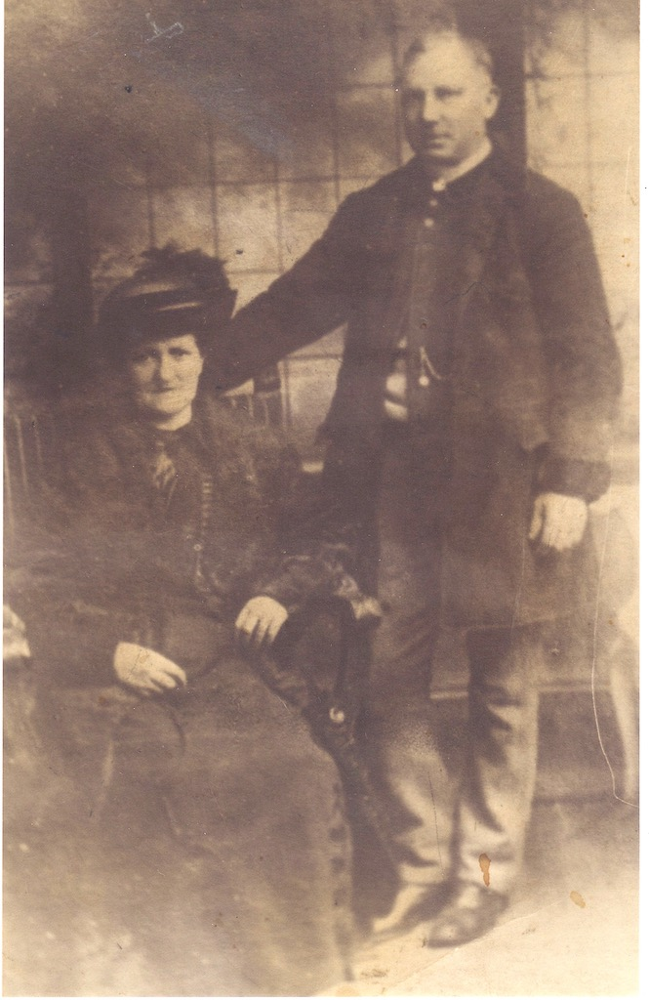
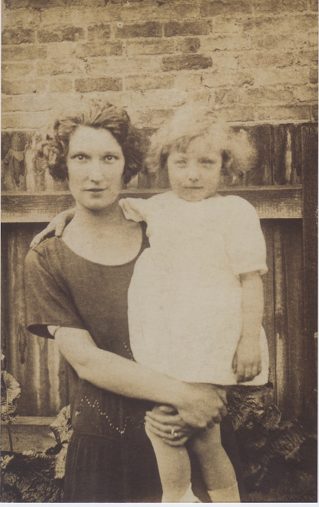
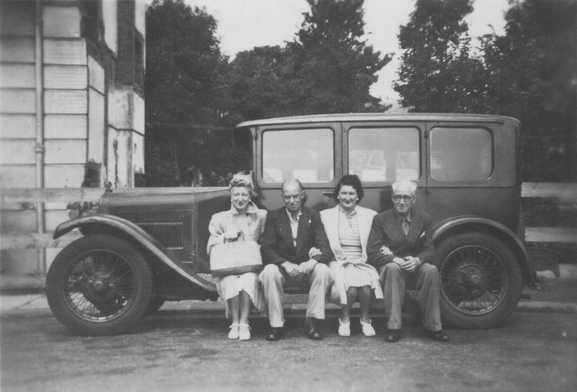
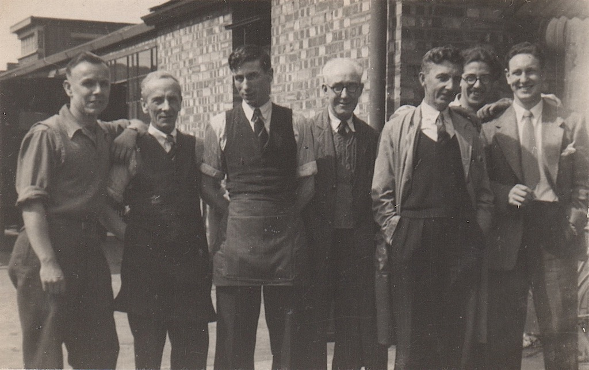
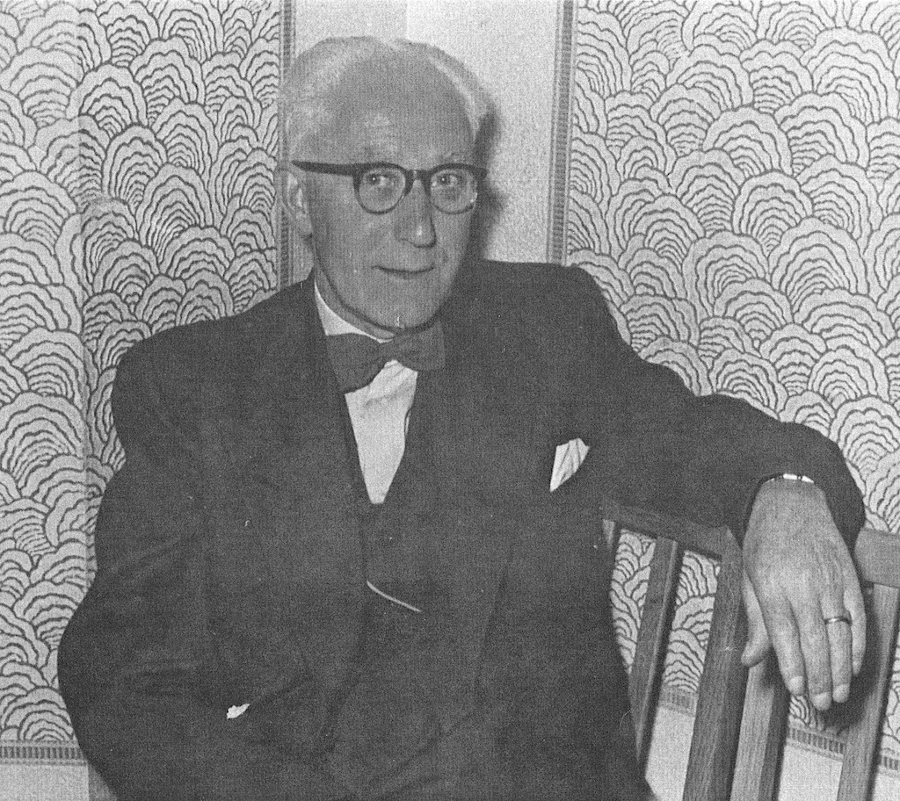
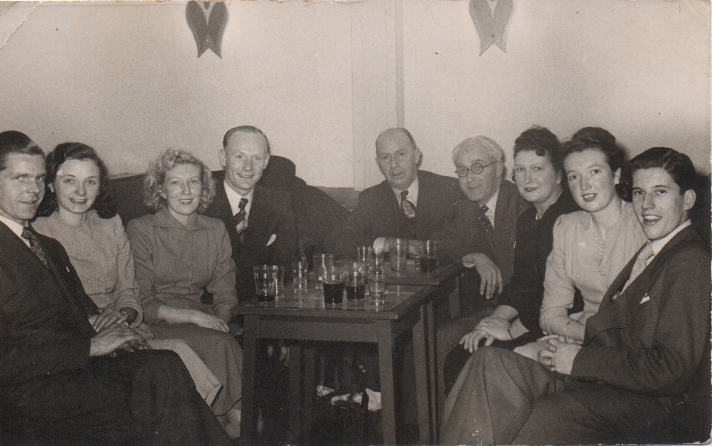

Harry Alfred Ludlam born 8th July 1895, died 22nd February 1975.
Rosina May Ludlam (nee Wilkinson) born 8th March 1899 in Tottenham, died 27th April 1999. This photo must have been taken in about 1902.
We don't know where or when they were married.
In 1943, when Eileen and Jim were married, May and Harry were living at 39 Alpha Road in Tottenham, North London.
For quite a long time they were living in a terraced house in Brantwood Road, Tottenham. On a match day you could hear the crowd shouting at the Tottenham Hotspur football ground. They may have initially been housekeepers for a single man who lived there.
On her death certificate May was described as a retired milliner and Harry as a retired clerical worker. Until he retired he worked in the stores at the Benjamin Electric of Brantwood Works, Tariff Road, Tottenham, London, N17. However, on Eileen and Jim's marriage certificate, Harry was described as a machinist.
Harry, a very quiet and softly spoken man, was injured in the First World War, with shrapnel in his neck and leg. He always had circulation problems in his feet and towards the end of his life had his toes amputated. He was quite deaf and used an old-style NHS hearing aid with a single earpiece and the body in his shirt pocket. You would see him on occassions turn it off when he wanted some peace and quiet.
When Harry died they were living in a first-floor flat at 28 Grange Road, Tottenham, N17, just around the corner from the house in Brantwood Road. Vera, who had lived upstairs in the house in Brantwood Road with Beryl, had bought the house either from Harry and May or from the single gentleman. Later, May moved to a care home in Henley-on-Thames, organised by Vera, who lived nearby.
May was always the dominant partner. Harry would just go along with whatever she wanted. Certainly when in Brantwood Road they had a piano in the front room. May would play, but seemed to make it up as she went along.
Apparently one of these men is James Wilkinson, May's father. What they are doing and where they are is anyones guess.
Here is another photo of Jim Wilkinson, this time with his wife Alice, May's mother.
And then one of May with her first daughter, Eileen.
May and Harry had a friend by the name of Greg. We always new him as 'Greggy' and we assume that this was his car, with Jim taking the photo. The last time that we saw Greggy he visit Eileen, Jim an David at their flat in Charlton Road, Edmonton. He brought David a 'six shooter', but David went out to play with his friends, with the gun and Greggy never visited us again.
The photo below is one of Harry at work, presumably at Benjamins. I only remember him with white hair.
This final photo shows the whole Ludlam family, plus Greg. From left to right are Jack, Rene's husband, Rene, Eileen, Jim, Greg, Harry, May, Vera and Ron, Vera's first husband and Beryl's father.
 Harry was 80 when he died, but May lived until she was 100. This is the telegram that she received from the Queen. Click on it to read it more easily.
Harry was 80 when he died, but May lived until she was 100. This is the telegram that she received from the Queen. Click on it to read it more easily.